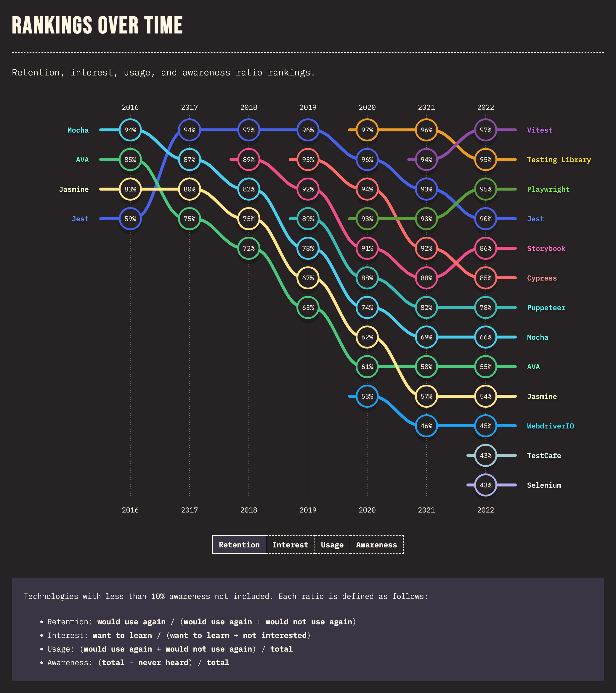

State of
 Testing 2023
Testing 2023
Javascript Testing: Status & Trends
- State of Javascript Testing 2023
- JS Testing Frameworks - Core Concepts
- Trends, Future & Beyond
State of Javascript Testing 2023
GitHub Stars History - E2E Test Frameworks
GitHub Stars History - Unit Test Frameworks
NPM Stats - E2E Test Frameworks
NPM Stats - Unit Test Frameworks
State of JS Testing 2022
JS Testing Frameworks - Core Concepts
Cypress.io
Cypress Test Runner
Cypress is / is not like jQuery
-
Cy bundles jQuery and exposes many of its DOM traversal methods
jQuery$('.my-selector')Cypresscy.get('.my-selector') -
Cy can't simple assign returned object from selector to a variable
const $cyElement = cy.get('.element') - Cy wraps all DOM queries with wait-retry-timeout logic
Cypress is asynchronous
- Cy commands are enqueued to be run later
- Cy commands run serially, never in parallel because of its wait-retry ability
- Cy commands are not Promises
-
can't be awaited (await/async)
it('foo', async () => { const form = await cy.get('form') }) - can't use
.catcherror handler cy.then()command isn't promise
Cypress Aliases & Fixtures
describe('foo', () => {
beforeEach(() => {
cy.get('.button').as('button')
})
it('test', function () {
const button = this.button
})
// or
it('test', () => {
cy.get('@button').then(btn => {
const button = btn
})
})
})
Summary
- ✅ run in browser
- ✅ jQuery alike
- ✅ asynchronous
- ✅ wait-retry-timeout
- assertion
- ✅ automatically retry
- ✅ implicit assertions
- ✅ component testing
- ✅ Cypress Cloud
- ✅ documentation
- ❌ limited access to CDP
- ❌ no Promise
- no async/await
- no error hendler
- ❌ .then() might cause callback hell
- ❌ too many dependencies
- ❌ can't run test parallely out-of-the-box
Playwright
Playwright is asynchronous
- Playwright is fundamentally designed around asynchronous programming concepts in JavaScript
- Playwright heavily uses Promises to manage these asynchronous operations
-
async/awaitas cleaner syntax for working with Promises
Playwright is paralel
- all tests run in worker processes, orchestrated by the test runner
- tests in a single file are run in order, in the same worker process by default
- limit workers or disable them
- sharding
- scale the tests execution among multiple machines simultaneously
npx playwright test --shard=1/4
npx playwright test --shard=2/4
npx playwright test --shard=3/4
npx playwright test --shard=4/4
Playwright Test
- Playwright Library + different test runner, e.g. Jest or Vitest
- Playwright Test, which is test runner by itself
Playwrigth Trace Viewer
- capture a detailed trace of the test execution
- normally run in CI
-
tracing can be forced to be on locally
npx playwright test --trace on - report containes "time travel", actions, console, network, source code, etc.
- DOM snapshoot

Playwright Fixtures
- Playwright Test is based on the concept of test fixtures, which are used to establish the environment for each test
- build-in fixuters
- "page - isoleted page for the current test run"
- "request - isoleted APIRequestContext instance"
- encapsulate setup and teardown
- reusable between test files, e.g. page
- on-demand
- simplify grouping - no longer need to wrap the tests in describe
Summary
- ✅ Chrome Devtools Protocol, and its variations for Firefox and Webkit
- ✅ asynchronous
- ✅ wait-retry-timeout
- assertion
- ✅ automatically retry
- ✅ implicit assertions
- ✅ parallelism
- ✅ multilanguage: JS/TS, Java, C#, Python
- ✅ zero dependencies
- ✅ trace viewer
- ❌ component testing - still experimental
- ❌ documentation altough it's not all bad
- ❌ steeper learning curve
Puppeteer
- ✅ Chrome Devtools Protocol
- ✅ asynchronous
- ✅ wait-retry-timeout
- ✅ WebDriver BiDi support - experimental
- ❌ support only chromium based browsers
- ❌ no test runner
- ❌ no visual debugging that offer cypress or playwright
- ❌ parallelism
- ❌ component testing
- ❌ documentation
- ❌ steeper learning curve
Trends, Future & Beyond
- Playwright and Vitest are crushing it in JS testing field
- Cypress & its pitfalls, but ...
- Cypress decided to block other cloud services Currents, Sorry Cypress and DeploySentinel
- Cypress uncertain future
- Cypress has released its new features, Test Replay & Branch Review
- PW for e2e, Cypress for component testing, and Vitest for Unit Testing by Jessica Sachs, former Cypress Component Testing dev
- Replay.io tool that allows you to record your application and then debug everything that happened during runtime
- SafeTest by Netflix
- WebDriver BiDi by Chrome Devs